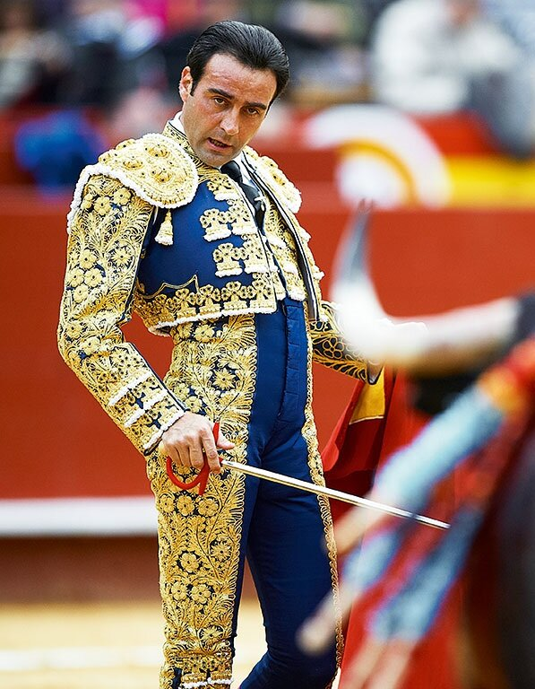

Paso Doble Phrasing 
29 June 2016
Paso Doble is almost always danced to one song: the Spanish Gypsy Dance (a.k.a. España Cañi), a song often played at Spanish bullfights. Even when other songs are used at competition, however, they always have the same phrasing. By knowing the phrasing, you can predict exactly when the dramatic parts of the song will occur, when the fast and slow parts are, and when the song will end. This allows you to choreograph a routine that fits the song perfectly, and makes you more musical. Look at any professional Paso Doble event and you will see that everyone's routines are choreographed exactly to the music, and with the knowledge you get here today, you should be able to do the same.
The Song
If you are unfamiliar with the Spanish Gypsy Dance, it's time to change that. You should know every beat and every note of this song by heart. Listen to it as you brush your teeth, hum along as you drive to work.
You need to know this song backward and forward, because if your routine is choreographed to this song and you need to stop on the floor because somebody gets in your way, you will need to recommence your routine from a new part of the song, not from where you left off, because the music isn't going to wait for you.
The Phrasing and Counts
Below is a chart depicting the phrasing and counts. Play the video above to listen to the song, and try to use this chart to count along through the song at the same time.
| 1234& 5678& | 1234& 5678& | 1234& 5678& | 1234& 5678& | 1234 |
| 12345678& | 12345678& | 12345678& | 12345678& | |
| 1234& 5678& | 1234& 5678& | 1 2 34 | ||
| 12345678 | 12345678910 | 12345678 | 123456 | |
| 1&a2&3&4&5&a6&7&8& | 1&a2&345678 | 1&a2&3&4&5&a6&7&8& | 12345678 | 123 4 5 6 |
| 12345678 | 12345678 | 12345678 | 12345678 | |
| 12345678 | 12345678 | |||
| 12345678 | 12345678 | 12345678 | 12345 | 1234567 8 |
The Highlights
The first thing you may have noticed about the chart above is that some of the numbers are coloured. Let's talk right now about the red and blue. The red counts represent highlights, and the blue counts represent rests. The highlights are emphatic parts of the music that you need to show in your dancing through some emphatic figures, such as the Spanish Lines. The rests are short silences in the music that allow the emphasis of the highlight to set in, and allow you to hold the highlight for longer. Take a look at Riccardo and Yulia, current Professional Latin World Champions, performing Paso Doble at a competition. Notice that when the highlights occur, everyone uses dramatic figures that have a lot of impact.
Although some people decide not to use a dramatic figure for the first highlight, you can see that Riccardo and Yulia chose to show all three highlights in their routine.
The Flamenco Section
The other colour you noticed in the chart above (green) represented the flamenco section. It is very popular to show the music in this section by dancing a mini-flamenco choreography (essentially Spanish tap dancing). Go back to the video of Riccardo and Yulia dancing, and you will see that Riccardo dances flamenco steps twice - at the beginning of each of the phrases coloured in green (skip to 1:10 in the video to see this). In the Syllabus, this is a great place to use the Coup de Pique or the Flamenco Taps, each of which can fit this section of the music.
Short and Long Phrases
If you have read our post on Musicality and Phrasing, you'll know that songs typically group into phrases of four and eight measures consistently, but this song breaks those rules. Notice that the majority of the phrases have eight beats, but there are some strange ones, which are underlined in the chart above. Not counting the highlights, there are four instances of this. The first one is a break in the music for four beats, which occurs at the end of the first line of the chart. The second and third instances are on line four, where there is a phrase of eight, then of ten, then of eight, and then of six. This sort of complex phrasing is common in flamenco music, and it is no wonder it appears in a song called the Spanish Gypsy Dance. Being aware of these strange phrases is important, because most Paso Doble figures take 8 beats to complete, and if you dance them during these extended or shortened phrases, your dancing will look slightly off. The fourth place this happens is in the second to last measure, where there are five beats.
The four beat break at the end of line one is easy to fill, since there are quite a number of Paso figures that take four beats, such as the Drag and the Attack. To fill the phrase that takes 10 beats, you may want to use an eight-beat figure that you can extend for two beats, such as the Grand Circle or the Travelling Spins from PP. For the phrase of six beats, you could shorten an eight beat figure, such as cutting the last two steps off the Open Telemark (which really only exist for phrasing that figure into eight beats anyway). In all of these instances, also, you could use any combination of the Sur Place, Basic Movement, and Chasses to the Right or the Left, which are the easiest ways of filling as much time as you need. As for the phrase that takes five beats, it isn't too much to worry about. Typically, Syllabus events end the song at the second highlight, so the song never gets that far. Open choreography has a lot more ways to deal with this strange phrase.
This is just the Surface
What we have covered today is just the surface of this song. The phrases can be broken down into more complex patterns, different phrases yet uncoloured above represent a preparation for the matador to attack or a parade around the arena. Listen to the music yourself, imagine the bullfight, and picture in your mind what is happening at each stage of the music. That is the image you want your choreography and your performance to express, and keeping this in mind will help you greatly.